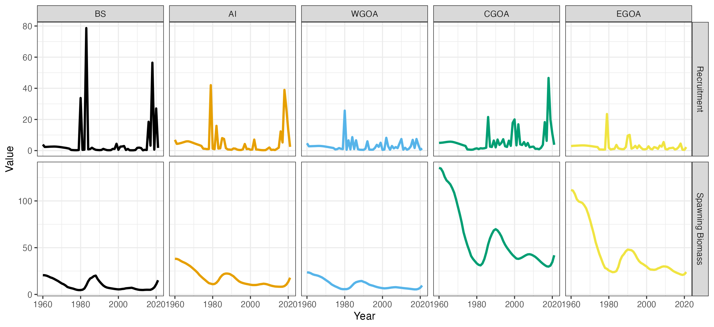

g_spatial_sablefish_case_study.RmdThe SPoCK package can be further generalized from a
single region assessment into a spatial assessment. Here, we will
demonstrate how a spatial stock assessment model might be set up.
Similar to previous vignettes, the spatial stock assessment illustrated
here uses various helper functions to facilitate setting it up. The
spatial stock assessment is a 5-region model and encompasses the Bering
Sea (BS), Aleutian Islands (AI), Western Gulf of Alaska (WGOA), Central
Gulf of Alaska (CGOA), and Eastern Gulf of Alaska (EGOA). A total of 30
ages are modeled, along with 2 sexes. Additionally, two fishery fleets
are modeled (fixed-gear and trawl) both of which operate across the
entire spatial domain defined. Two survey fleets are also modeled
(cooperative Japanese and domestic longline), which operates annually in
the Gulf of Alaska, and biennially between the BS and AI regions. Let us
first load in the necessary packages and data files.
# Load in packages
library(SPoCK)
library(RTMB)
library(ggplot2)
library(dplyr)
data(mlt_rg_sable_data) # load in dataTo initially set the model up, an input list containing a data list,
parameter list, and a mapping list needs to be constructed. This is
aided with the function Setup_Mod_Dim, where users specify
a vector of years, ages, and lengths. Additionally, users need to
specify the number of regions modeled (n_regions), number of sexes
modelled (n_sexes), number of fishery fleets (n_fish_fleets), and number
of survey fleets (n_srv_fleets)
input_list <- Setup_Mod_Dim(years = 1:length(mlt_rg_sable_data$years),
# vector of years (1 - 62)
ages = mlt_rg_sable_data$ages,
# vector of ages (1 - 30)
lens = mlt_rg_sable_data$lens,
# number of lengths (41 - 99)
n_regions = mlt_rg_sable_data$n_regions,
# number of regions (5)
n_sexes = mlt_rg_sable_data$n_sexes,
# number of sexes (2)
n_fish_fleets = mlt_rg_sable_data$n_fish_fleets,
# number of fishery fleet (2)
n_srv_fleets = mlt_rg_sable_data$n_srv_fleets,
# number of survey fleets (2)
verbose = TRUE
)Following the initialization of input_list, we can pass
the created object into the next function (Setup_Mod_Rec)
to parameterize recruitment dynamics. In the case of the spatial model
for Alaska sablefish, recruitment is parameterized as such:
do_bias_ramp = 1),sigmaR are used, the first value
represents an early period sigmaR, which is fixed at 0.4,
while the second value represents a late period sigmaR,
which is fixed at a value of 1.2.
input_list <- Setup_Mod_Rec(input_list = input_list, # input data list from above
do_rec_bias_ramp = 0, # not using bias ramp
sigmaR_switch = 16, # switch to using late sigma in year 16
dont_est_recdev_last = 1, # don't estimate last rec dev
sexratio = c(0.5, 0.5), # fix sex ratio at 0.5
# Model options
rec_model = "mean_rec", # recruitment model
sigmaR_spec = "fix", # fixing
InitDevs_spec = "est_shared_r",
# initial deviations are shared across regions,
# but recruitment deviations are region specific
ln_sigmaR = log(c(0.4, 1.2)),
# values to fix sigmaR at, or starting values
ln_global_R0 = log(20),
# starting value for global R0
R0_prop = array(c(0.2, 0.2, 0.2, 0.2),
dim = c(input_list$data$n_regions - 1))
# starting value for R0 proportions in multinomial logit space
)Passing on the input_list that was updated in the
previous helper function, we can then parameterize the biological
dynamics of the model. The Setup_Mod_Biologicals requires
data inputs for weight-at-age (WAA) and maturity-at-age
(MatAA), both of which are dimensioned by
n_regions, n_years, n_ages,
n_sexes. Optional model inputs include a single
ageing-error matrix AgeingError, dimensioned by
n_ages, n_ages, and a size-age transition
matrix, whichn is dimensioned by n_regions,
n_years, n_lens, n_ages,
n_sexes. In this case, we are supplying both an ageing
error matrix and a size-age transition matrix, given that the spatial
sablefish model incorporates ageing error and also fits to length
composition data (fit_lengths = 1). Given that spatial
models are heavily parameterized and natural mortality is often poorly
estimated, we are fixing natural mortality M_spec = "fix"
at a value of 0.104884, which is specified to be
sex-invariant.
input_list <- Setup_Mod_Biologicals(input_list = input_list,
WAA = mlt_rg_sable_data$WAA, # weight at age
MatAA = mlt_rg_sable_data$MatAA, # maturity at age
AgeingError = mlt_rg_sable_data$AgeingError,
# ageing error matrix
fit_lengths = 1, # fitting lengths
SizeAgeTrans = mlt_rg_sable_data$SizeAgeTrans,
# size age transition matrix
M_spec = "fix", # fix natural mortality
ln_M = log(0.104884) # value to fix natural mortality at
)Various options are available for parameterizing movement dynamics.
In particular, users can specify any number of age, year, and sex blocks
for movement. If users wish to specify blocks for the aforementioned
partitions, a list needs to be supplied detailing the blocking
structure, where the number of elements in the list represents the
number of blocks to estiamte, and the elements within the list should
specify the range of the block. For instance, the spatial model for
sablefish estimates 3 age blocks,
(Movement_ageblk_spec = list(c(1:6), c(7:15), c(16:30))),
where the first element specifies the first age block, which ranges from
ages 1 - 6, the second element specifies the second age block, which
ranges from ages 7 - 15, and the third element specifies the third age
block, which ranges from ages 16 - 30. No year and sex blocks are
specified for this application. Thus, both
Movement_yearblk_spec and Movement_sexblk_spec
are set at "constant". Additionally, recruits are not
allowed to move, given the potential for severe confounding between
recruitment and movement if this is allowed
(do_recruits_move = 0). Fixed movement is not used in this
case (use_fixed_movement = 0) and a vague Dirichlet prior
for movement (Use_Movement_Prior = 1 and
Movement_prior = 1.75) is used to penalize movement away
from the extremes (i.e, away from 0s and 1s).
input_list <- Setup_Mod_Movement(input_list = input_list,
# Model options
Movement_ageblk_spec = list(c(1:6), c(7:15), c(16:30)),
# estimating movement in 3 age blocks
# (ages 1-6, ages 7-15, ages 16-30)
Movement_yearblk_spec = "constant", # time-invariant movement
Movement_sexblk_spec = "constant", # sex-invariant movement
do_recruits_move = 0, # recruits do not move
use_fixed_movement = 0, # estimating movement
Use_Movement_Prior = 1, # priors used for movement
Movement_prior = 1.75
# vague prior to penalize movement away from the extremes
)Specification of tagging dynamics can be a bit cumbersome given the
myriad of options available. In the current application, tagging data
from a longline survey are utilized UseTagging = 1 and a
maximum tag liberty of 15 years is specified
max_tag_liberty = 15 for tag cohort tracking. This cut off
is used to minimize computational demands, while providing a reasonable
level of movement information. Next, we need to specify some data
inputs. These primarily include:
tag_release_indicator, which indicates the release year
and release region of a given tag cohort,Tagged_Fish, which contains the number of tagged fish
in each tag cohort, andObs_Tag_Recap, which contains the observed tag
recapturesFollowing the specification of our data inputs, we can then specify
several model options. Here, can specify the likelihood type utilized
for tagging data (Tag_LikeType = "NegBin"), which is
specified as a negative binomial, with an overdispersion parameter
estimated. We can also specify a tag mixing period
(mixing_period = 2), which indicates to the model to not
fit tag recapture data until release_year + 1, given that
tagged individuals have not fully mixed. Additionally, the function also
takes a time at tagging argument t_tagging, which is
specified at a value of 0.5 to indicate that tagging happens midway
through the year, and movement does not occur in the tag release year.
Users can also specify how tagging fishing and natural mortality occurs.
In this application, tagging fishing mortality / selectivity is
specified as tag_selex = "SexSp_AllFleet", which indicates
that the selectivity curve utilized to fit to tag data is sex-specific
is derived by a weighting fishery fleet-specific selectivity by fishing
mortality. The option tag_natmort = "AgeSp_SexSp" specifies
that tagged individuals experience age-and sex-specific natural
mortality. For more options, users can inspect
?Setup_Mod_Tagging.
Next, we can specify whether tag reporting rate priors are used
(Use_TagRep_Prior = 1) and the type of prior used
(TagRep_PriorType = 0). Here, tag reporting priors are in
fact used, and a symmetric beta prior is specified. Given that, the
symmetric beta prior does not require an input for a mean value for tag
reporting (TagRep_mu = NA), but does require an input for
the standard deviation (TagRep_sd = 5), where larger values
penalize the extremes more. We then specify the
move_age_tag_pool and move_sex_tag_pool
arguments which indicate to the model how tagging data should be fit. In
this case, we are fitting tag data by their respective age and
sex-blocks to reduce computational demand. If users wish to fit tag data
by their individual ages and sexes, move_age_tag_pool would
be specified as list(1,2,3,4 ..., n_ages) and
move_sex_tag_pool would be list(1,2).
Because initial tagging mortality and chronic tag shedding are often
confounded with other mortality processes and difficult to estiamte, we
will fix these parameters in this application
(Init_Tag_Mort_spec = "fix" and
Tag_Shed_spec = "fix"). Lastly, we will specify the
estimation of tag reporting rates, which are time-varying (estimated as
2 blocks; see input supplied to the Tag_Reporting_blocks
argument) but are shared across regions
(TagRep_spec = "est_shared_r").
input_list <- Setup_Mod_Tagging(input_list = input_list,
UseTagging = 1, # using tagging data
max_tag_liberty = 15, # maximum number of years to track a cohort
# Data Inputs
tag_release_indicator = mlt_rg_sable_data$tag_release_indicator,
# tag release indicator (first col = tag region,
# second col = tag year),
# total number of rows = number of tagged cohorts
Tagged_Fish = mlt_rg_sable_data$Tagged_Fish, # Released fish
# dimensioned by total number of tagged cohorts, (implicitly
# tracks the release year and region), age, and sex
Obs_Tag_Recap = mlt_rg_sable_data$Obs_Tag_Recap,
# dimensioned by max tag liberty, tagged cohorts, regions,
# ages, and sexes
# Model options
Tag_LikeType = "NegBin", # Negative Binomial
mixing_period = 2, # Don't fit tagging until release year + 1
t_tagging = 0.5, # tagging happens midway through the year,
# movement does not occur within that year
tag_selex = "SexSp_AllFleet", # tagging recapture selectivity
# is a weighted average of fishery selectivity of two fleets
tag_natmort = "AgeSp_SexSp", # tagging natural mortality is
# age and sex-specific
Use_TagRep_Prior = 1, # tag reporting rate priors are used
TagRep_PriorType = 0, # symmetric beta is used
# for tag reporting prior
TagRep_mu = NA, # Tag reporting mean
TagRep_sd = 5, # tag reporting sd controlling symmetric beta
move_age_tag_pool = list(c(1:6), c(7:15), c(16:30)), # whether or
# not to pool tagging data when fitting (for computational cost)
move_sex_tag_pool = list(c(1:2)), # whether or not to pool
# sex-specific data when fitting
Init_Tag_Mort_spec = "fix", # fixing initial tag mortality
Tag_Shed_spec = "fix", # fixing chronic shedding
TagRep_spec = "est_shared_r", # tag reporting rates are
# not region specific
# Time blocks for tag reporting rates
Tag_Reporting_blocks = c(
paste("Block_1_Year_1-35_Region_",
c(1:input_list$data$n_regions), sep = ''),
paste("Block_2_Year_36-62_Region_",
c(1:input_list$data$n_regions), sep = '')
),
# Specify starting values or fixing values
ln_Init_Tag_Mort = log(0.1), # fixing initial tag mortality
ln_Tag_Shed = log(0.02), # fixing tag shedding
ln_tag_theta = log(0.5),
# starting value for tagging overdispersion
Tag_Reporting_Pars = array(log(0.2 / (1-0.2)),
dim = c(input_list$data$n_regions, 3))
# starting values for tag reporting pars
)In general, specifying catch and fishing mortality is relatively
straightforward. Users need to supply several data inputs, which include
an array of observed catches ObsCatch, the catch type
(Catch_Type), which indicates if we gave region-specific or
region-aggregated catch, and UseCatch, which indicates
whether or not to fit to catch data in a given region and year. Users
can inspect the mlt_rg_sable_data data object to further
understand the dimensions of data inputs, or refer to the Description of
Model and Data Dimensions vignette. Given that we are going to be using
TMB-style likelihoods, we are also specifying that the sigma for catch
is fixed (sigmaC_spec = 'fix') at a value of 0.02 for all
fleets and regions
(ln_sigmaC = array(log(0.02), dim = c(input_list$data$n_regions, input_list$data$n_fish_fleets))).
input_list <- Setup_Mod_Catch_and_F(input_list = input_list,
# Data inputs
ObsCatch = mlt_rg_sable_data$ObsCatch,
Catch_Type = mlt_rg_sable_data$Catch_Type,
UseCatch = mlt_rg_sable_data$UseCatch,
# Model options
Use_F_pen = 1,
# whether to use f penalty, == 0 don't use, == 1 use
sigmaC_spec = 'fix',
ln_sigmaC =
array(log(0.02), dim = c(input_list$data$n_regions,
input_list$data$n_fish_fleets)),
# fixing catch sd at small value
ln_F_mean = array(-2, dim = c(input_list$data$n_regions,
input_list$data$n_fish_fleets))
# some starting values for fishing mortality
)Setting up fishery (and survey) index and composition data can
similarly be a bit cumbersome, given the number of data inputs that may
be required. Users can inspect the mlt_rg_sable_data data
object to further understand the dimensions of data inputs, or refer to
the Description of Model and Data Dimensions vignette. These data inputs
include the following: 1. ObsFishIdx and
ObsSrvIdx, which specifies the observed indices 2.
ObsFishIdx_SE and ObsSrvIdx_SE, which
specifies the standard errors of the observed indices 3.
UseFishIdx and UseSrvIdx, which indicate
whether or not indices are fit to 4. ObsFishAgeComps and
ObsSrvAgeComps contains the observed age compositions 5.
UseFishAgeComps and UseSrvAgeComps indicates
whether or not age compositions are fit to 6.
ISS_FishAgeComps and ISS_SrvAgeComps indicates
the input sample sizes used to weight age compositions 7.
ObsFishLenComps and ObsSrvLenComps contains
the observed length compositions 8. UseFishLenComps and
UseSrvLenComps indicates whether or not length compositions
are fit to 9. ISS_FishLenComps and
ISS_SrvLenComps indicates the input sample sizes used to
weight length compositions
Model options available are similar to those described in the Setting
up a Single Region Model (Alaska Sablefish) vignette. In the case of
fishery indices, fish_idx_type is specified at
none given that these are not used. Age composition
likelihoods are specified as
FishAgeComps_LikeType = c("Multinomial", "none"),
indicating that the first fleet uses a Multinomial and the second fleet
does not have age compositions. Fishery length compositions are
specified as Multinomial for both fleets. With respect to
FishAgeComps_Type and FishLenComps_Type, these
are both specified as spltRjntS when they are availiable to
indicate that compositions sum to 1 jointly across sexes, split by a
given region.
# Fishery Indices and Compositions
input_list <- Setup_Mod_FishIdx_and_Comps(input_list = input_list,
# data inputs
ObsFishIdx = mlt_rg_sable_data$ObsFishIdx,
ObsFishIdx_SE = mlt_rg_sable_data$ObsFishIdx_SE,
UseFishIdx = mlt_rg_sable_data$UseFishIdx,
ObsFishAgeComps = mlt_rg_sable_data$ObsFishAgeComps,
UseFishAgeComps = mlt_rg_sable_data$UseFishAgeComps,
ISS_FishAgeComps = mlt_rg_sable_data$ISS_FishAgeComps,
ObsFishLenComps = mlt_rg_sable_data$ObsFishLenComps,
UseFishLenComps = mlt_rg_sable_data$UseFishLenComps,
ISS_FishLenComps = mlt_rg_sable_data$ISS_FishLenComps,
# Model options
fish_idx_type = c("none", "none"),
# fishery indices not used
FishAgeComps_LikeType =
c("Multinomial", "none"),
# age comp likelihoods for fishery fleet 1 and 2
FishLenComps_LikeType =
c("Multinomial", "Multinomial"),
# length comp likelihoods for fishery fleet 1 and 2
FishAgeComps_Type =
c("spltRjntS_Year_1-62_Fleet_1",
"none_Year_1-62_Fleet_2"),
# age comp structure for fishery fleet 1 and 2
FishLenComps_Type =
c("spltRjntS_Year_1-62_Fleet_1",
"spltRjntS_Year_1-62_Fleet_2"),
# length comp structure for fishery fleet 1 and 2
FishAge_comp_agg_type = c(NA,NA),
# ADMB aggregation quirks, ideally get rid of this
FishLen_comp_agg_type = c(NA,NA)
# ADMB aggregation quirks, ideally get rid of this
)The same arguments are expected for survey indices and compositions. Here, 2 survey fleets are specified, where they are abundance based for both fleets. Age compositions for both fleets are joint by sex, but split by region, while length compositions are not used. All compositions for the survey fleets assume a Mulinomial likelihood.
input_list <- Setup_Mod_SrvIdx_and_Comps(input_list = input_list,
# data inputs
ObsSrvIdx = mlt_rg_sable_data$ObsSrvIdx,
ObsSrvIdx_SE = mlt_rg_sable_data$ObsSrvIdx_SE,
UseSrvIdx = mlt_rg_sable_data$UseSrvIdx,
ObsSrvAgeComps = mlt_rg_sable_data$ObsSrvAgeComps,
ISS_SrvAgeComps = mlt_rg_sable_data$ISS_SrvAgeComps,
UseSrvAgeComps = mlt_rg_sable_data$UseSrvAgeComps,
ObsSrvLenComps = mlt_rg_sable_data$ObsSrvLenComps,
UseSrvLenComps = mlt_rg_sable_data$UseSrvLenComps,
ISS_SrvLenComps = mlt_rg_sable_data$ISS_SrvLenComps,
# Model options
srv_idx_type = c("abd", "abd"),
# abundance and biomass for survey fleet 1 and 2
SrvAgeComps_LikeType =
c("Multinomial", "Multinomial"),
# survey age composition likelihood for survey fleet
# 1, and 2
SrvLenComps_LikeType =
c("none", "none"),
# no length compositions used for survey
SrvAgeComps_Type = c("spltRjntS_Year_1-62_Fleet_1",
"spltRjntS_Year_1-62_Fleet_2"),
# survey age comp type
SrvLenComps_Type = c("none_Year_1-62_Fleet_1",
"none_Year_1-62_Fleet_2"),
# survey length comp type
SrvAge_comp_agg_type = c(NA, NA),
# ADMB aggregation quirks, ideally get rid of this
SrvLen_comp_agg_type = c(NA, NA)
# ADMB aggregation quirks, ideally get rid of this
)In the spatial sablefish application, all fishery/survey selectivity and catchability processes are assumed to be spatially-invariant. Similar to the single region case, users will need to specify several selectivity options, which include:
cont_tv_fish_sel or cont_tv_srv_sel). For
this case study, continuous time-varying selectivity is not used and is
specified as none_Fleet_x,fish_sel_blocks or
srv_sel_blocks). This application assumes 2 time-blocks for
the fixed-gear fleet and time-invariant selectivity for the trawl
fishery,fish_sel_model or srv_sel_model).
Here, we assume logist1 for the fixed-gear fleet (logistic
specified as a50 and k), and
gamma dome-shaped selectivity for the trawl fleet,fish_q_blocks or srv_q_blocks). Given that no
fishery indices are used, fishery catchability has no blocks are
estimated
(fish_q_blocks = c("none_Fleet_1", "none_Fleet_2")),fish_fixed_sel_pars). In the case of sablefish, we are
first specifying that all selectivity parameters (by regions,
time-blocks, sexes) should be estimated. However, there are some more
nuanced parameter sharing across regions, sexes, and time-blocks that
are used to help stabilize the model (last part of this code chunk), and
cannot be easily generalized. Thus, users can manually extract the
map list from the updated input_list object to
modify how parameters should be fixed or shared,fish_q_spec or srv_q_spec). For the fishery,
catchability is not estimated as no fishery indices are utilized
(fix).
input_list <- Setup_Mod_Fishsel_and_Q(input_list = input_list,
# Model options
cont_tv_fish_sel = c("none_Fleet_1", "none_Fleet_2"),
# fishery selectivity, whether continuous time-varying
# fishery selectivity blocks
fish_sel_blocks =
c("Block_1_Year_1-56_Fleet_1",
# block 1, fishery ll selex
"Block_2_Year_57-62_Fleet_1",
# block 3 fishery ll selex
"none_Fleet_2"),
# no blocks for trawl fishery
# fishery selectivity form
fish_sel_model =
c("logist1_Fleet_1",
"gamma_Fleet_2"),
# fishery catchability blocks
fish_q_blocks =
c("none_Fleet_1",
"none_Fleet_2"),
# no blocks since q is not estimated
# whether to estimate all fixed effects
# for fishery selectivity and later modify
# to fix and share parameters
fish_fixed_sel_pars =
c("est_all", "est_all"),
# whether to estimate all fixed effects
# for fishery catchability
fish_q_spec =
c("fix", "fix")
# fix fishery q since not used
)
# Custom parameter sharing for fishery selectivity
map_ln_fish_fixed_sel_pars <- input_list$par$ln_fish_fixed_sel_pars # mapping fishery selectivity
# Fixed gear fleet, unique parameters for each sex (time block 1)
map_ln_fish_fixed_sel_pars[,1,1,1,1] <- 1 # a50, female, time block 1, fixed gear
map_ln_fish_fixed_sel_pars[,2,1,1,1] <- 2 # delta, female, time block 1, fixed gear
# (shared with time block 2 and sex)
map_ln_fish_fixed_sel_pars[,1,1,2,1] <- 3 # a50, male, time block 1, fixed gear
map_ln_fish_fixed_sel_pars[,2,1,2,1] <- 2 # delta, male, time block 1, fixed gear
# (shared with time block 2 and sex)
# time block 2, fixed gear fishery
map_ln_fish_fixed_sel_pars[,1,2,1,1] <- 4 # a50, female, time block 2, fixed gear
map_ln_fish_fixed_sel_pars[,2,2,1,1] <- 2 # delta, female, time block 2, fixed gear
# (shared with time block 1 and sex)
map_ln_fish_fixed_sel_pars[,1,2,2,1] <- 5 # a50, male, time block 2, fixed gear
map_ln_fish_fixed_sel_pars[,2,2,2,1] <- 2 # delta, male, time block 2, fixed gear
# (shared with time block 1 and sex)
# time block 1 and 2, trawl gear fishery
map_ln_fish_fixed_sel_pars[,1,1,1,2] <- 6 # amax, female, time block 1, trawl gear
map_ln_fish_fixed_sel_pars[,2,1,1,2] <- 7 # delta, female, time block 1, trawl gear
# (shared by sex)
map_ln_fish_fixed_sel_pars[,1,1,2,2] <- 8 # amax, male, time block 1, trawl gear
map_ln_fish_fixed_sel_pars[,2,1,2,2] <- 7 # delta, male, time block 1, trawl gear
# (shared by sex)
map_ln_fish_fixed_sel_pars[,,2,,2] <- NA # no parameters estimated for time block 2 trawl gear
input_list$map$ln_fish_fixed_sel_pars <- factor(map_ln_fish_fixed_sel_pars) # input into map list
input_list$par$ln_fish_fixed_sel_pars[] <- log(5) # some more inforamtive starting valuesAgain, the same arguments are expected for setting up survey selectivity, and there are similarly some nuanced parameter fixing and sharing to help facilitate model stability.
input_list <- Setup_Mod_Srvsel_and_Q(input_list = input_list,
# Model options
# survey selectivity, whether continuous time-varying
cont_tv_srv_sel =
c("none_Fleet_1",
"none_Fleet_2"),
# survey selectivity blocks
srv_sel_blocks =
c("none_Fleet_1",
"none_Fleet_2"
), # no blocks for jp and domestic survey
# survey selectivity form
srv_sel_model =
c("logist1_Fleet_1",
"logist1_Fleet_2"),
# survey catchability blocks
srv_q_blocks =
c("none_Fleet_1",
"none_Fleet_2"),
# whether to estiamte all fixed effects
# for survey selectivity and later
# modify to fix/share parameters
srv_fixed_sel_pars_spec =
c("est_all",
"est_all"),
# whether to estiamte all
# fixed effects for survey catchability
# spatially-invariant q
srv_q_spec =
c("est_shared_r",
"est_shared_r"),
# Starting values for survey catchability
ln_srv_q = array(9,
dim = c(input_list$data$n_regions, 1,
input_list$data$n_srv_fleets))
)
# Custom mapping survey selectivity stuff
map_ln_srv_fixed_sel_pars <- input_list$par$ln_srv_fixed_sel_pars # set up mapping factor stuff
# Coop survey (japanese)
map_ln_srv_fixed_sel_pars[,1,1,1,1] <- 1 # a50, coop survey, time block 1, female
map_ln_srv_fixed_sel_pars[,2,1,1,1] <- 2 # delta, coop survey, time block 1, female
# (sharing with domestic survey)
map_ln_srv_fixed_sel_pars[,1,1,2,1] <- 3 # a50, coop survey, time block 1, male
map_ln_srv_fixed_sel_pars[,2,1,2,1] <- 4 # delta, coop survey, time block 1, male
# (sharing with domestic survey)
# domestic survey
map_ln_srv_fixed_sel_pars[,1,1,1,2] <- 5 # a50, domestic survey, time block 1, female
map_ln_srv_fixed_sel_pars[,2,1,1,2] <- 2 # delta, domestic survey, time block 1, female
# (sharing with coop survey)
map_ln_srv_fixed_sel_pars[,1,1,2,2] <- 6 # a50, domestic survey, time block 1, male
map_ln_srv_fixed_sel_pars[,2,1,2,2] <- 4 # delta, domestic survey, time block 1, male
# (sharing with coop survey)
input_list$map$ln_srv_fixed_sel_pars <- factor(map_ln_srv_fixed_sel_pars) # input into map list
input_list$par$ln_srv_fixed_sel_pars[] <- log(5) # some more informative starting valuesFinally, we can specify how we want model weighting to be conducted.
In this case, we are using TMB-style likelihoods
(likelihoods = 1) such that all data sources are weighted
with user specified sigmas or standard errors. Thus, the remaining
arguments of Wt_Catch, Wt_FishIdx,
Wt_SrvIdx, Wt_Rec, and Wt_F are
specified at 1. Additionally, Francis re-weighting is not used in this
case study and composition weights are similarly specified at values of
1 (Wt_FishAgeComps, Wt_FishLenComps,
Wt_SrvAgeComps, and Wt_SrvLenComps).
input_list <- Setup_Mod_Weighting(input_list = input_list,
sablefish_ADMB = 0,
# don't use sablefish single region ADMB quirks
likelihoods = 1, # using TMB-style likelihoods,
# and weight using sigmas, instead of lambdas
# and sigmas together
Wt_Catch = 1,
Wt_FishIdx = 1,
Wt_SrvIdx = 1,
Wt_Rec = 1,
Wt_F = 1,
# Composition model weighting
Wt_FishAgeComps =
array(1, dim = c(input_list$data$n_regions,
length(input_list$data$years),
input_list$data$n_sexes,
input_list$data$n_fish_fleets)),
Wt_FishLenComps =
array(1, dim = c(input_list$data$n_regions,
length(input_list$data$years),
input_list$data$n_sexes,
input_list$data$n_fish_fleets)),
Wt_SrvAgeComps =
array(1, dim = c(input_list$data$n_regions,
length(input_list$data$years),
input_list$data$n_sexes,
input_list$data$n_srv_fleets)),
Wt_SrvLenComps =
array(1, dim = c(input_list$data$n_regions,
length(input_list$data$years),
input_list$data$n_sexes,
input_list$data$n_srv_fleets))
)We are done with the setup! Now, we can run our model. This is aided
by the fit_model function, which expects a
data, mapping, and parameters
list and uses the MakeADFUN function internally. These
lists can be extracted from the input_list constructed. The
report file is extracted out internally from fit_model and
standard errors can then be extracted using the
RTMB::sdreport function. As a word of caution, this could
take a while to run!
# extract out lists updated with helper functions
data <- input_list$data
parameters <- input_list$par
mapping <- input_list$map
# Fit model
sabie_rtmb_model <- fit_model(data,
parameters,
mapping,
random = NULL,
newton_loops = 3,
silent = TRUE
)
# Get standard error report
sabie_rtmb_model$sd_rep <- RTMB::sdreport(sabie_rtmb_model)Inspecting results from our spatial model, it appears that the highest spawning biomass occurs in the CGOA, followed by the EGOA. Western regions generally demonstrate relatively comparable levels of spawning biomass. By contrast, western regions (BS and AI) along with the CGOA appear to exhibit the highest recruitment levels.
# Get recruitment time-series
rec_series <- reshape2::melt((sabie_rtmb_model$rep$Rec))
rec_series$Par <- "Recruitment"
# Get SSB time-series
ssb_series <- reshape2::melt((sabie_rtmb_model$rep$SSB))
ssb_series$Par <- "Spawning Biomass"
ts_df <- rbind(ssb_series,rec_series) # bind together
# Do some data munging here
ts_df <- ts_df %>% dplyr::rename(Region = Var1, Year = Var2) %>%
dplyr::mutate(Region = dplyr::case_when(
Region == 1 ~ 'BS',
Region == 2 ~ 'AI',
Region == 3 ~ 'WGOA',
Region == 4 ~ 'CGOA',
Region == 5 ~ 'EGOA'
),
Region = factor(Region, levels = c("BS", "AI", "WGOA", "CGOA", "EGOA")),
Year = Year + 1959)
# plot!
ggplot(ts_df, aes(x = Year, y = value, color = Region)) +
geom_line(size = 1.3) +
facet_grid(Par~Region, scales = "free_y") +
ggthemes::scale_color_colorblind() +
labs(y = "Value") +
theme_bw(base_size = 13) +
theme(legend.position = 'none')